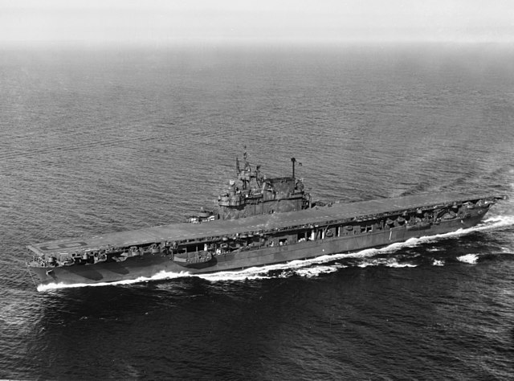
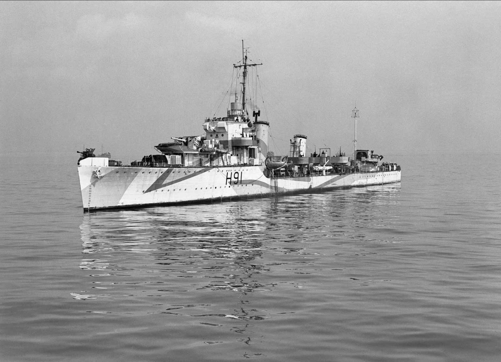
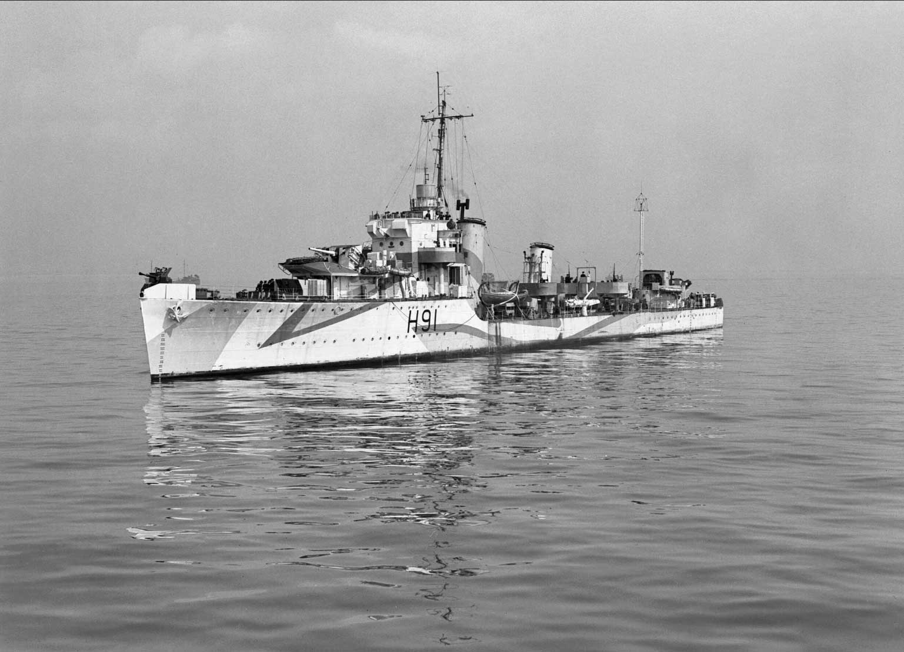
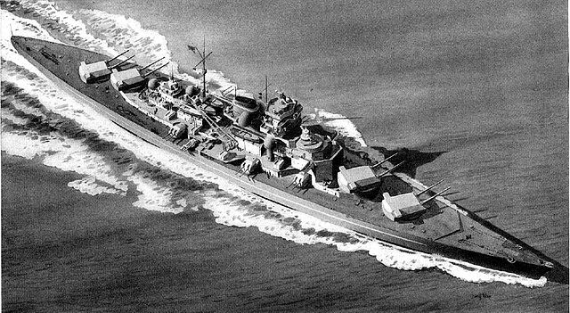
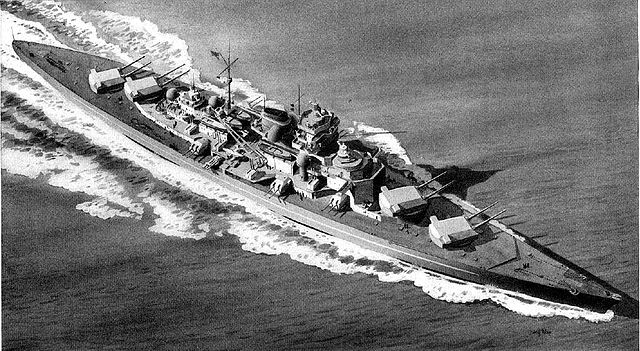

Technische Daten
Verdrängung: 25,500ts (vollgeladen)
Länge: 247m
Breite: 33m
Tiefgang: 6,7m Standard
Besatzung: 2919 Personen im Pazifikkrieg

Antrieb: 4 Parsons-Dampfturbinen 9 Babcock & Wilcox-Kessel 120.000 PS auf 4 Antriebswellen
Geschwindigkeit: 33,65kn
Bewaffnung
8 × 5"/38-(127-mm)-Mehrzweckkanonen
4 × 1.1"/75-(28-mm)-Vierlings-Flak
4 bis 16 × 40-mm-Bofors-Geschütze
32 bis 50 × 20-mm-Oerlikon-Kanonen
24 × Maschinengewehre Browning M2 .50 cal (12,7 mm)
Flugzeuge: 96 Stück (max. 80–90 an Bord)
Die USS Enterprise CV-6 war ein Flottenflugzeugträger der United States Navy. Als einziges der drei Schiffe ihrer Klasse erlebte die Enterprise das Ende des Zweiten Weltkriegs, wurde dann aber 1947 ausser Dienst gestellt und schliesslich von 1958 bis 1960 verschrottet. Sie nahm an nahezu allen wichtigen Seeschlachten und Operationen auf dem pazifischen Kriegsschauplatz teil und war zeitweilig der einzige einsatzbereite Flugzeugträger der US-Marine im gesamten Pazifikraum. Bis heute ist sie das höchstdekorierte Schiff in der Geschichte der US Navy.
Enterprise CV-6 (USA)
HMS Bulldog H91 (Grossbritannien)
Technische Daten
Verdrängung: 1.360ts Standard
Länge: 98,4 m
Breite: 9,8 m
Tiefgang: max. 3,7 m
Besatzung: 134–186 Personen
 Antrieb: 3 Admirality-3-Trommel-Dampfkessel 2 Parsons-Getriebeturbinen 35.500 PS
Geschwindigkeit: 35,25kn
Bewaffnung
4 x 120-mm-Geschütze L/45 Mk.IX
2 x 40-mm-pompom-Flak
2 × 4 Torpedorohre 533 mm
20–35 Wasserbomben 2 Werfer, 1 Abwurfschiene
Flugzeuge: Keine
HMS Bulldog (H91) war ein Zerstörer der B-Klasse, der im April 1931 in den Dienst der britischen Royal Navy kam. Im Zweiten Weltkrieg wurde der Zerstörer mit den Battle Honours „Atlantic 1941–45“ und „Artic 1942–44“ ausgezeichnet. Am 9. Mai 1941 gelang es einem Enterkommando des Zerstörers, vom deutschen U-Boot U 110, das der Zerstörer mit anderen Einheiten zum Auftauchen gezwungen hatte, wertvolles Geheimmaterial und insbesondere die erste vollständige Enigma-Chiffriermaschine zu bekommen. Im April 1942 verteidigte die Beagle mit anderen Zerstörern im Nordmeer den Geleitzug QP 11 erfolgreich gegen Angriffe verschiedener deutscher Zerstörer.
Verdrängung: 1.360ts Standard
Länge: 98,4 m
Breite: 9,8 m
Tiefgang: max. 3,7 m
Besatzung: 134–186 Personen
 Antrieb: 3 Admirality-3-Trommel-Dampfkessel 2 Parsons-Getriebeturbinen 35.500 PS
Geschwindigkeit: 35,25kn
Bewaffnung
4 x 120-mm-Geschütze L/45 Mk.IX
2 x 40-mm-pompom-Flak
2 × 4 Torpedorohre 533 mm
20–35 Wasserbomben 2 Werfer, 1 Abwurfschiene
Flugzeuge: Keine
HMS Bulldog (H91) war ein Zerstörer der B-Klasse, der im April 1931 in den Dienst der britischen Royal Navy kam. Im Zweiten Weltkrieg wurde der Zerstörer mit den Battle Honours „Atlantic 1941–45“ und „Artic 1942–44“ ausgezeichnet. Am 9. Mai 1941 gelang es einem Enterkommando des Zerstörers, vom deutschen U-Boot U 110, das der Zerstörer mit anderen Einheiten zum Auftauchen gezwungen hatte, wertvolles Geheimmaterial und insbesondere die erste vollständige Enigma-Chiffriermaschine zu bekommen. Im April 1942 verteidigte die Beagle mit anderen Zerstörern im Nordmeer den Geleitzug QP 11 erfolgreich gegen Angriffe verschiedener deutscher Zerstörer.
Tirpitz (Deutschland)
Technische Daten
Verdrängung: 41.700tn
Länge: 251m
Breite: 36m
Tiefgang: max 9,9m
Besatzung: 2'500 Personen
 Antrieb: 12 Dampfkessel 3 Satz BBC-Getriebeturbinen 2 Ruder 163.026 PS
Geschwindigkeit: 30,8 kn
Bewaffnung
8 × Sk 38 cm L/52
12 × Sk 15 cm L/55
16 × Flak 10,5 cm L/65
16 × Flak 3,7 cm L/83
12–58 × Flak 2 cm L/65
8 × Torpedorohr 53,3 cm
Flugzeuge: Keine
Die Tirpitz war ein im Zweiten Weltkrieg eingesetztes Schlachtschiff der deutschen Kriegsmarine. Sie gehörte der Bismarck-Klasse an und war nach dem deutschen Marinestaatssekretär und Grossadmiral Alfred von Tirpitz benannt. Bis heute wurde in Europa kein grösseres Schlachtschiff gebaut. Den grössten Teil ihrer Dienstzeit war die Tirpitz nach dem sogenannten Präsenzflotte-Konzept in Norwegen stationiert und bedrohte von dort allein durch ihre Präsenz die alliierten Geleitzüge nach Murmansk. Gegebenenfalls sollte sie helfen, eine alliierte Invasion in diesem Gebiet abzuwehren. Nach mehreren vergeblichen Angriffen auf die Tirpitz wurde sie am 12. November 1944 bei einem Luftangriff der Royal Air Force im Sandnessund, einer Meerenge in Norwegen, zum Kentern gebracht.
Verdrängung: 41.700tn
Länge: 251m
Breite: 36m
Tiefgang: max 9,9m
Besatzung: 2'500 Personen
 Antrieb: 12 Dampfkessel 3 Satz BBC-Getriebeturbinen 2 Ruder 163.026 PS
Geschwindigkeit: 30,8 kn
Bewaffnung
8 × Sk 38 cm L/52
12 × Sk 15 cm L/55
16 × Flak 10,5 cm L/65
16 × Flak 3,7 cm L/83
12–58 × Flak 2 cm L/65
8 × Torpedorohr 53,3 cm
Flugzeuge: Keine
Die Tirpitz war ein im Zweiten Weltkrieg eingesetztes Schlachtschiff der deutschen Kriegsmarine. Sie gehörte der Bismarck-Klasse an und war nach dem deutschen Marinestaatssekretär und Grossadmiral Alfred von Tirpitz benannt. Bis heute wurde in Europa kein grösseres Schlachtschiff gebaut. Den grössten Teil ihrer Dienstzeit war die Tirpitz nach dem sogenannten Präsenzflotte-Konzept in Norwegen stationiert und bedrohte von dort allein durch ihre Präsenz die alliierten Geleitzüge nach Murmansk. Gegebenenfalls sollte sie helfen, eine alliierte Invasion in diesem Gebiet abzuwehren. Nach mehreren vergeblichen Angriffen auf die Tirpitz wurde sie am 12. November 1944 bei einem Luftangriff der Royal Air Force im Sandnessund, einer Meerenge in Norwegen, zum Kentern gebracht.